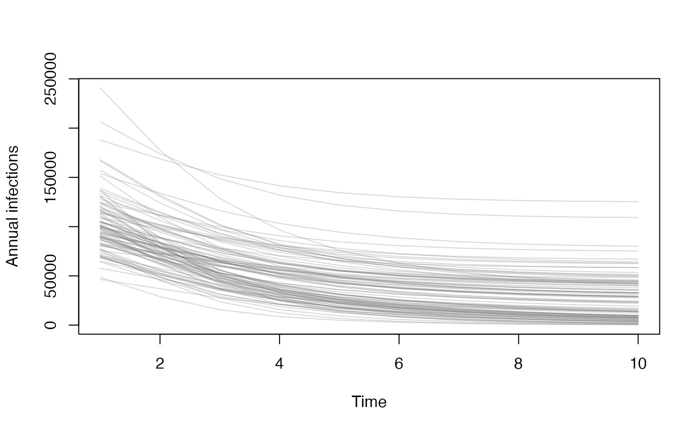
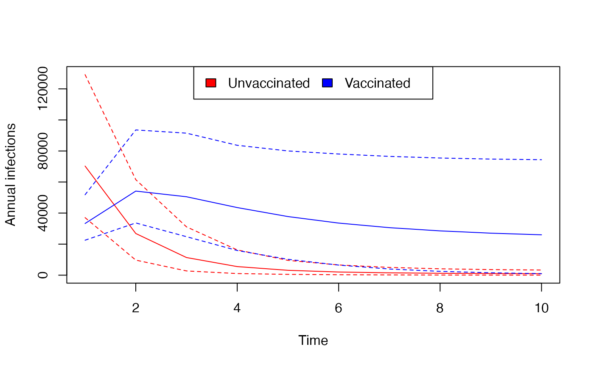

Getting started
Lilith Whittles
2024-03-19
getting_started.RmdRunning the model without vaccination
First we will run the model without vaccination.
Start by reading in your table of parameters:
library("gonovax")
#>
#> Attaching package: 'gonovax'
#> The following object is masked from 'package:stats':
#>
#> aggregate
#> The following object is masked from 'package:base':
#>
#> transform
parameter_table <- read.csv(system.file("extdata/gono_params_t.csv",package='gonovax'))
head(parameter_table)
#> beta eta_l eta_h epsilon mu nu psi
#> 1 0.5548627 0.3443120 0.7972842 0.6424030 209.93828 4.959542 0.09410734
#> 2 0.3170303 0.3801225 0.5502756 0.5980645 367.67133 2.186269 0.15101774
#> 3 0.3539354 0.4109142 0.5373065 0.8849614 326.20064 2.352640 0.12483779
#> 4 0.3103453 0.3766348 0.7828353 0.4517068 187.20356 1.923302 0.19032818
#> 5 0.4528126 0.3873987 0.7570947 0.7225662 96.52862 3.765360 0.12384225
#> 6 0.6251540 0.3599922 0.5629054 0.6053695 255.82950 4.711401 0.08233706
#> rho sigma prev_Ash prev_Asl
#> 1 51.29849 46.42424 0.07490694 0.001812143
#> 2 62.06935 80.99252 0.06012777 0.009626622
#> 3 56.91546 155.36248 0.06817730 0.008933017
#> 4 46.38395 69.83441 0.05306220 0.007125388
#> 5 73.68399 132.37154 0.03265509 0.008589632
#> 6 53.32993 74.55650 0.07191239 0.002668673We need to transform the table of parameters to the format the model
requires using the transform_fixed function. First we only
use 100 parameter sets:
n_par <- 100
# transform the parameter table
gono_params <- lapply(seq_len(n_par),
function(i) transform_fixed(parameter_table[i, ]))We then run the model to equilibrium without vaccination, and save the final states for each parameter set so we can restart with vaccination:
# define the times of the output (in years)
tt <- c(0, 50)
# run the model
y0 <- run_onevax_xvwv(tt, gono_params)
# get final (equilibrium) model state to use as starting point of run with vaccination
init_params <- lapply(y0, restart_params)Running the model with vaccination
We now run the model with vaccination.
The efficacy inputs (vea, vei,
ved, ves) can be of length 1 or
n_par
The strategy can be one of:
-
VoD: vaccination on diagnosis -
VoA: vaccination on attendance -
VoD(L)+VoA(H): targeted vaccination (i.e. all diagnosed plus group H on screening)
The proportion of those eligible that choose to be vaccinated,
uptake is a scalar from 0 to 1:
y is now a list of model runs of length
n_par, each entry contains a list of model outputs. Each of
these list entries y[[i]] is a list of model output arrays
with dimensions: time, group (L, H), and vaccine status (X, V, W) where
applicable
# generate vaccine effects parameters
ve <- data.frame(vea = 0.1, # efficacy against acquisition
vei = 0.2, # efficacy against infectiousness
ved = 0.3, # efficacy against duration of infection
ves = 0.4) # efficacy against symptoms
tt <- seq(0, 10)
y <- run_onevax_xvwv(tt,
gono_params = gono_params,
init_params = init_params,
vea = ve$vea, ved = ve$ved, ves = ve$ves,
uptake = 1, strategy = "VoA")
names(y[[1]])
#> [1] "t" "U" "I"
#> [4] "A" "S" "T"
#> [7] "cum_incid" "cum_diag_a" "cum_diag_s"
#> [10] "cum_treated" "cum_screened" "cum_offered"
#> [13] "cum_vaccinated" "cum_vaccinated_screen" "cum_vbe"
#> [16] "cum_offered_vbe" "cum_entrants" "tot_treated"
#> [19] "tot_attended" "beta" "eta"
#> [22] "lambda" "N"
dim(y[[1]]$cum_incid)
#> [1] 11 2 3
dimnames(y[[1]]$cum_incid)
#> [[1]]
#> NULL
#>
#> [[2]]
#> [1] "L" "H"
#>
#> [[3]]
#> [1] "X.I" "V1.I" "W.I"
# cumulative incidence in unvaccinated group L over time
y[[1]]$cum_incid[, "L", "X.I"]
#> [1] 0.000 9105.584 10078.213 10105.456 10105.722 10105.724 10105.724
#> [8] 10105.724 10105.724 10105.724 10105.724Graphical representations of results
This can be aggregated over group (L, H) and strata (X, V, W) to give the total cumulative infections for each parameter set (rows) over time (columns).
total_infected <- aggregate(y, what = "cum_incid")
col <- rgb(0.5, 0.5, 0.5, 0.3)
matplot(tt, t(total_infected), lty = 1, type = "l", col = col,
xlab = "Time", ylab = "Cumulative infections")
This can be aggregated over group (L, H) and strata (X, V, W) to give the yearly infections for each parameter set (rows) over time (columns).
annual_infected <- aggregate(y, what = "cum_incid", as_incid = TRUE)
matplot(tt[-1], t(annual_infected), lty = 1, type = "l", col = col,
xlab = "Time", ylab = "Annual infections")
You can look at individual vaccine strata:
annual_infected_X <- aggregate(y, what = "cum_incid", as_incid = TRUE,
stratum = "X.I")
annual_infected_V <- aggregate(y, what = "cum_incid", as_incid = TRUE,
stratum = "V1.I")
col1 <- rgb(0.5, 0, 0, 0.3)
col2 <- rgb(0, 0, 0.5, 0.3)
matplot(tt[-1], t(annual_infected_X), lty = 1, type = "l", col = col1,
xlab = "Time", ylab = "Annual infections")
matlines(tt[-1], t(annual_infected_V), lty = 1, col = col2)
legend("top", fill = c(col1, col2), legend = c("Unvaccinated", "Vaccinated"),
ncol = 2)You can apply functions over the parameter sets to get summary statistics:
mean_ci <- function(x) c(mean = mean(x), quantile(x, c(0.025, 0.975)))
summary_annual_infected_X <- aggregate(y, what = "cum_incid", as_incid = TRUE,
stratum = "X.I", f = mean_ci)
summary_annual_infected_V <- aggregate(y, what = "cum_incid", as_incid = TRUE,
stratum = "V1.I", f = mean_ci)
col1 <- "red"
col2 <- "blue"
matplot(tt[-1], t(summary_annual_infected_X), lty = c(1, 2, 2), type = "l", col = col1,
xlab = "Time", ylab = "Annual infections")
matlines(tt[-1], t(summary_annual_infected_V), lty = c(1, 2, 2), col = col2)
legend("top", fill = c(col1, col2), legend = c("Unvaccinated", "Vaccinated"),
ncol = 2)